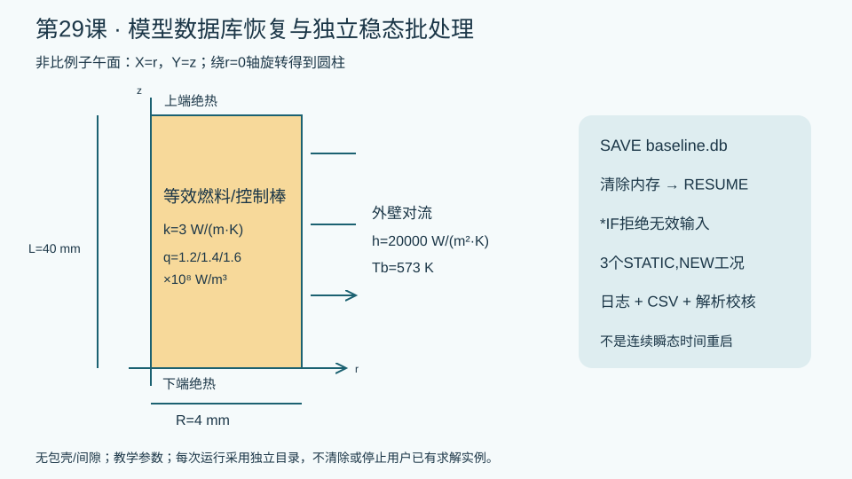

验证状态：已通过 MAPDL 求解
隔离MAPDL实际完成数据库恢复与三个稳态工况：3行7列，中心温升最大误差0.2868%，热平衡误差1.89e-14；网格减半误差降为0.0822%。无效h输入成功写出BAD_H并拒绝结果/完成标记。不是物理瞬态状态重启。

今日目标
建立可检查失败原因、恢复模型数据库并可靠重算参数点的APDL批处理。区分模型恢复与真正的瞬态分析重启动。
物理问题
等效燃料或控制棒采用PLANE55轴对称热模型，半径4 mm、长度40 mm，常导热率3 W/(m·K)。均匀生热率依次为1.2、1.4、1.6×10⁸ W/m³；外壁对流系数20000 W/(m²·K)，冷却剂573 K，两个端面绝热。单位为m、W、K。图为非比例子午面，没有包壳、间隙或接触层。
这些物性和边界仅用于学习，不是从今日TBM或涂层论文提取的工程参数。保持新目录、独立作业名和完整输入记录，禁止在用户已有求解实例执行清除命令。
关键命令
| 命令 | 本课作用与边界 |
|---|---|
| SAVE,baseline,db | 保存几何、网格和参数；本课在施加热载荷前保存。 |
| /CLEAR,NOSTART | 清除内存数据库；文件仍在磁盘，变量也会清除。 |
| RESUME,baseline,db | 恢复数据库及其中参数。不能把它解释为恢复全部瞬态历史。 |
| *IF | 在求解前拒绝不合法物性与边界，保留可检查的错误标记。 |
| /EXIT,NOSAVE | 仅退出本脚本所在独立MAPDL实例，保留有效检查点。 |
| ANTYPE,STATIC,NEW | 每个参数点独立稳态求解；不是三个连续时间步。 |
| *CFOPEN / *VWRITE | 写入结果和状态文件；格式行紧跟写命令且无行尾注释。 |
| SET,LAST / *GET | 读取本参数点求解结果，再用解析值和热平衡核对。 |
完整脚本
下载本页example.inp。脚本先建模并保存数据库，清除内存后恢复，再检查导热率和换热系数，最后重算三个参数点。每条可执行命令均有中文行尾说明。
本课演示的是“数据库恢复后重新计算独立稳态参数点”。真正的瞬态或非线性多帧重启，还需要相应的重启文件、载荷步/子步与匹配求解器版本，并按官方RESCONTROL和ANTYPE,,REST流程执行。不能只读一个.db就声称继续了原瞬态状态。
预期结果
解析外壁温度为Tb + qR/(2h)；中心温度为Tb + qR/(2h) + qR²/(4k)。三个工况的解析中心温度分别为745、773.6667、802.3333 K，外壁温度为585、587、589 K。这些是理论参考，数值误差应由实际结果表计算。
batch_results.csv有3行7列：参数点编号、生热率、数值中心温度、数值外壁温度、解析中心温度、温升相对误差、热平衡误差。batch_complete.txt只表示已走到写表末尾；还须检查日志、行数、有限值和解析误差。退出码为0也可能是主动拒绝输入，不能单独据此判定成功。
验证清单
- 检查m/W/K单位一致，生热率必须为W/m³。
- 确认数据库恢复后的半径、材料和网格数量与保存前一致。
- 确认只在外壁施加对流，端面保持自然绝热。
- 用温升而非绝对温度计算误差，并核对整体热量平衡。
- 在独立失败目录令
hcoef=0，应写出BAD_H且不产生完成标记；修正后在新的重试目录运行。字符标记不超过8个字符，以避免APDL字符写入截断。 - 在独立细网格目录将尺寸减半，比较中心温升误差；保留各次输入与输出。
本次隔离验证结果
MAPDL实际求解了三个独立稳态热源工况，结果表为3行7列；中心温升相对解析式的最大误差为0.2868%，整体热量平衡相对误差为1.89×10⁻¹⁴。网格尺寸由0.25 mm减为0.125 mm后，中心温升最大误差下降至0.0822%。在另一个独立目录将对流系数设为0，程序写出BAD_H并拒绝生成结果与完成标记。求解退出码、日志、标记和数值同时检查才构成验证；这些结果不证明真实材料参数或连续瞬态重启动正确。详细记录见validation/validation-summary.json。
常见错误
- 清除数据库后还使用旧内存参数：先恢复保存的数据库，再施加载荷。
- 把旧目录中的完成标记当作本次成功：每次运行使用新目录，并核对输入摘要、结果更新时间和日志。
- 将稳态重算写成瞬态重启动：本课明确采用
STATIC,NEW；连续物理时间重启需要另行验证重启文件和状态。
练习题
将导热率改为6 W/(m·K)，预测并核对中心温度；不要把另一输入的旧结果表用于比较。扩展到燃料—包壳间隙模型时，分别保存材料、接触和载荷定义，并设计一次缺失接触参数的拒绝输入检查。只有通过正确工况的基准验证后，才讨论自动跳过已完成参数点。
参考
- [ANSYS RESUME命令说明](https://ansyshelp.ansys.com/public/Views/Secured/corp/v252/en/ans_cmd/Hlp_C_RESUME.html)：数据库及参数恢复语义。
- [ANSYS分析重启动流程](https://ansyshelp.ansys.com/public/Views/Secured/corp/v252/en/ans_bas/Hlp_G_BAS3_12.html)：多帧重启所需条件与步骤。
完整 example.inp（逐行中文注释）
01/CLEAR,NOSTART ! 仅在隔离目录运行；SI单位m、W、K 02/FILNAME,lesson29 ! 本课独立作业前缀 03/PREP7 ! 建立数据库检查点之前的热模型 04ET,1,PLANE55 ! 四节点热单元 05KEYOPT,1,3,1 ! 轴对称，X为径向、Y为轴向 06rad=0.004 ! 等效棒半径4 mm 07alen=0.040 ! 轴向长度40 mm 08kcond=3 ! 教学常导热率W/(m K) 09hcoef=20000 ! 外壁换热系数W/(m2 K)，必须大于零 10tbulk=573 ! 冷却剂温度K 11MP,KXX,1,kcond ! 教学等效燃料，不代表真实温度相关物性 12RECTNG,0,rad,0,alen ! 圆柱子午面 13MSHKEY,1 ! 映射网格 14MSHAPE,0,2D ! 四边形网格 15ESIZE,0.00025 ! 名义尺寸0.25 mm 16AMESH,ALL ! 建立模型网格 17ALLSEL,ALL ! 保存全部模型选择 18FINISH ! 离开前处理 19SAVE,baseline,db ! 保存无热载荷的模型及标量参数检查点 20/CLEAR,NOSTART ! 模拟内存模型丢失，不删除磁盘检查点 21RESUME,baseline,db ! 恢复数据库及保存的参数；不是瞬态时间状态重启 22*IF,kcond,LE,0,THEN ! 导热率不合法则记录失败并退出此作业 23*CFOPEN,input_failed,txt ! 写入可由批处理检查的失败标记 24*VWRITE,'BAD_K' ! 状态标记不超过8字符；下一行是纯字符格式 25(A) 26*CFCLOS ! 关闭失败标记 27/EXIT,NOSAVE ! 退出独立求解器，不覆盖有效检查点 28*ENDIF ! 完成导热率检查 29*IF,hcoef,LE,0,THEN ! 对流系数不合法则拒绝求解 30*CFOPEN,input_failed,txt ! 不只依赖进程退出码 31*VWRITE,'BAD_H' ! 状态标记不超过8字符；下一行纯字符格式 32(A) 33*CFCLOS ! 保留本次错误证据 34/EXIT,NOSAVE ! 只退出本脚本所在实例 35*ENDIF ! 完成边界检查 36*CFOPEN,batch_results,csv ! 新目录中写入三个独立稳态工况 37*DO,icase,1,3 ! 三个参数点不是时间步 38qvol=1E8+icase*2E7 ! 生热1.2、1.4、1.6E8 W/m3 39/PREP7 ! 覆盖当前工况载荷 40ALLSEL,ALL ! 体积热源施加全部单元 41BFE,ALL,HGEN,,qvol ! 覆盖上一个参数点的热源 42NSEL,S,LOC,X,rad ! 只选择外壁 43SF,ALL,CONV,hcoef,tbulk ! 外面对流，端面自然绝热 44ALLSEL,ALL ! 求解前恢复全部节点单元 45FINISH ! 离开前处理 46/SOLU ! 求解当前参数点 47ANTYPE,STATIC,NEW ! 独立稳态重算，不继承物理瞬态状态 48OUTRES,ALL,ALL ! 保存温度结果 49SOLVE ! 实际求解 50FINISH ! 离开求解器 51/POST1 ! 检查温度和解析参考 52SET,LAST ! 当前参数点结果 53ncenter=NODE(0,alen/2,0) ! 轴线中点节点 54nouter=NODE(rad,alen/2,0) ! 外壁中点节点 55*GET,tc,NODE,ncenter,TEMP ! 中心温度K 56*GET,to,NODE,nouter,TEMP ! 外壁温度K 57texact=tbulk+qvol*rad/(2*hcoef)+qvol*rad**2/(4*kcond) ! 常物性均匀热源解析中心温度K 58errtemp=ABS(tc-texact)/(texact-tbulk) ! 温升相对误差，避免绝对K温度掩盖误差 59errbal=ABS(hcoef*2*rad*(to-tbulk)-qvol*rad**2)/(qvol*rad**2) ! 均匀轴向情况下热量平衡 60*VLEN,1 ! 每次只写当前工况一行 61*VWRITE,icase,qvol,tc,to,texact,errtemp,errbal ! 下一行纯格式，七列 62(F3.0,6(',',E17.10)) 63FINISH ! 结束本参数点 64*ENDDO ! 完成三个独立工况 65*CFCLOS ! 关闭结果表 66*CFOPEN,batch_complete,txt ! 在结果表完成后才生成完成标记 67*VWRITE,'DONE_3' ! 短标记只表示表已写出，外部仍须查错误及误差 68(A) 69*CFCLOS ! 关闭完成标记 70FINISH ! 批处理结束